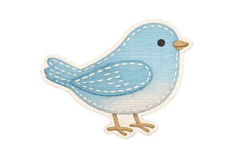
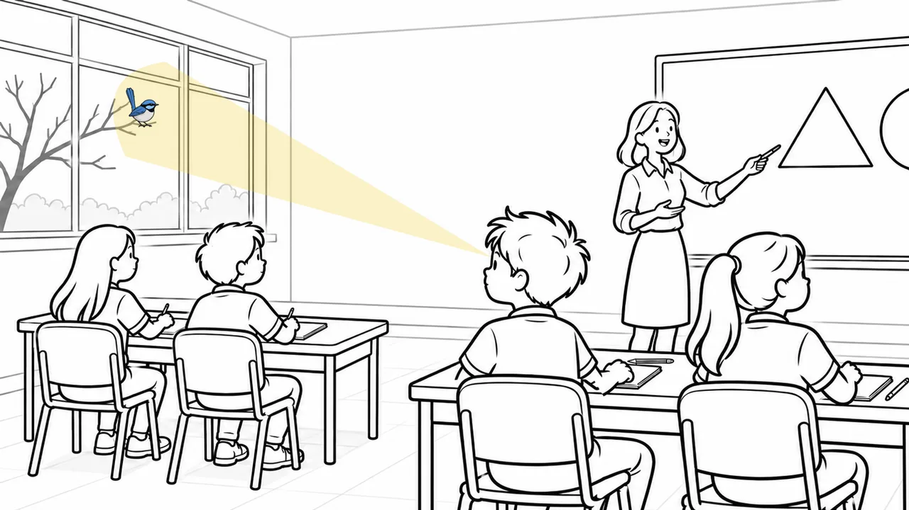
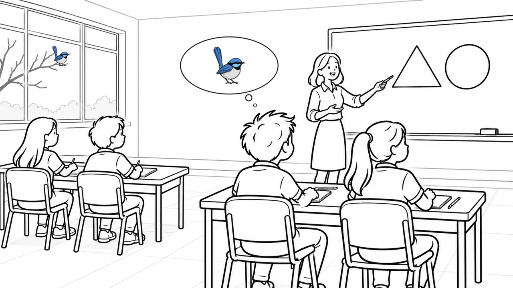

New from Knowledge Nest
The Secrets of How We Learn
A cognitive science curriculum for primary school children
Short animated episodes that let children in on how their brains learn - and why their teachers teach the way they do.
Episode 1 now in production
Letting children in on the secret
Every day, children are asked to put their pencils down, turn to the front, talk to a partner, or practise something one more time. They are rarely told why.
The Secrets of How We Learn changes that. It translates well-established findings from cognitive science into language primary school children can understand, so the routines and teaching practices they meet every day make sense to them.
When children understand how learning works, routines stop feeling like rules to follow and start feeling like tools they can use. They become active partners in their own learning.

Why teach children how learning works?
The science of learning has transformed how many teachers teach. This curriculum shares it with the people doing the learning.
It explains the why
Children learn the reasons behind everyday classroom routines, such as eyes to the front, turn and talk, and quiet independent work, so they can see how each one helps them think.
It builds a shared language
Teachers and students gain simple, memorable ways to talk about learning, like the attention spotlight, that can be used across every subject and year level.
It grows learner agency
Everyone's mind wanders sometimes. Rather than blame, children learn to notice it and bring their focus back, because they are the ones doing the thinking.
Episode 1
What's All the Fuss About Attention?
Why does your teacher sometimes want everyone quiet, pencils down and facing the front? In the first episode, children follow a maths lesson that is interrupted by a little blue wren landing outside the window, and discover what is really happening to their attention.
Big ideas in Episode 1
- Attention is like a spotlight. There are always things to see, sounds to hear and thoughts to think. We can't focus on everything at once, so we choose what to shine our spotlight on.
- Classrooms are set up to protect it. How desks are arranged, where you sit and keeping your desk clear all help to reduce unnecessary distractions.
- Looking isn't the same as thinking. You can be looking straight at your teacher while your mind is still out the window with the bird.
- The right target changes. Sometimes your spotlight belongs on the teacher's explanation, sometimes on a partner's ideas, and sometimes on your own task.
- Everyone's attention wanders. The skill is noticing when it happens and bringing it back.

Who it's for
Designed for primary classrooms, and useful for everyone who supports a child's learning.
Teachers
- Explain the purpose behind your routines in child-friendly language
- Give students a shared vocabulary for attention and learning
- Short episodes that fit easily into the school day
School leaders
- Reinforce a whole-school, evidence-informed instructional model
- Build consistent language about learning across year levels
- Help students see the reasons behind school-wide routines
Families
- Understand why today's classrooms look and sound the way they do
- Continue the conversation about learning at home
- Support children to notice and manage their own focus
Frequently asked questions
What is The Secrets of How We Learn?
It is a cognitive science curriculum for primary school children, created by Knowledge Nest. Through short animated episodes, children learn how their brains take in, focus on and remember new learning, and why their teachers use the routines and strategies they do.
Who created it?
The curriculum is written by Jo Griffin, an educational consultant and instructional coach with more than 20 years' experience in teaching, school leadership and evidence-based instructional improvement in Australian schools.
Is it based on research?
Yes. Each episode draws on well-established findings from cognitive science, the same research behind the Science of Learning approaches now being adopted by schools and systems across Australia, explained in a way that children can understand.
When will it be available?
Episode 1, What's All the Fuss About Attention?, is currently in production. Register your interest and we'll let you know as soon as it is ready.
How can my school get involved?
Register your interest using the enquiry form, or book a free 20-minute chat with Jo to talk about how the curriculum could support your school's instructional model.
Be the first to know
Register your interest in The Secrets of How We Learn and we'll be in touch when Episode 1 is released.